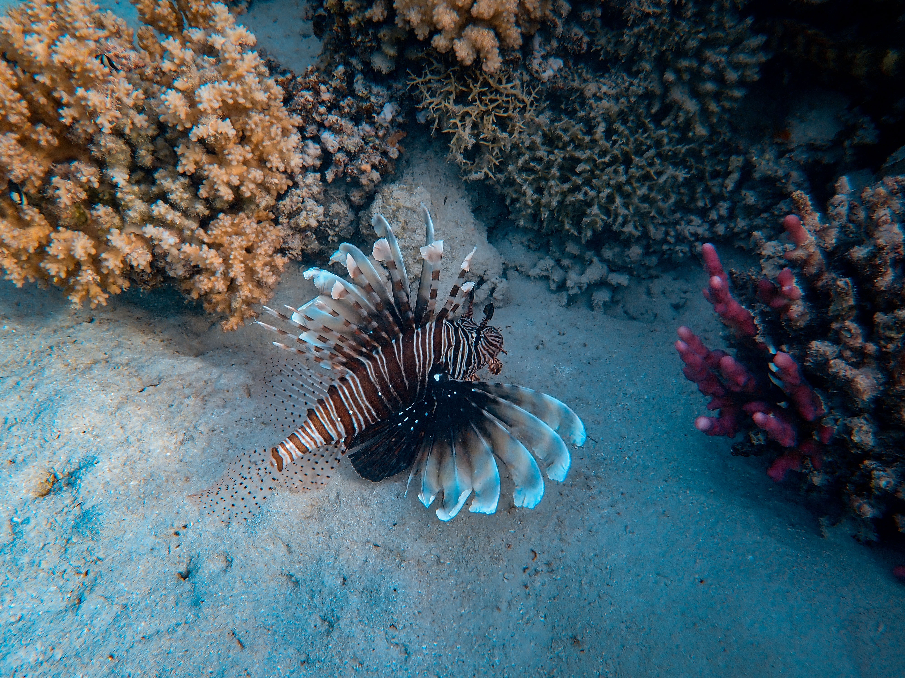
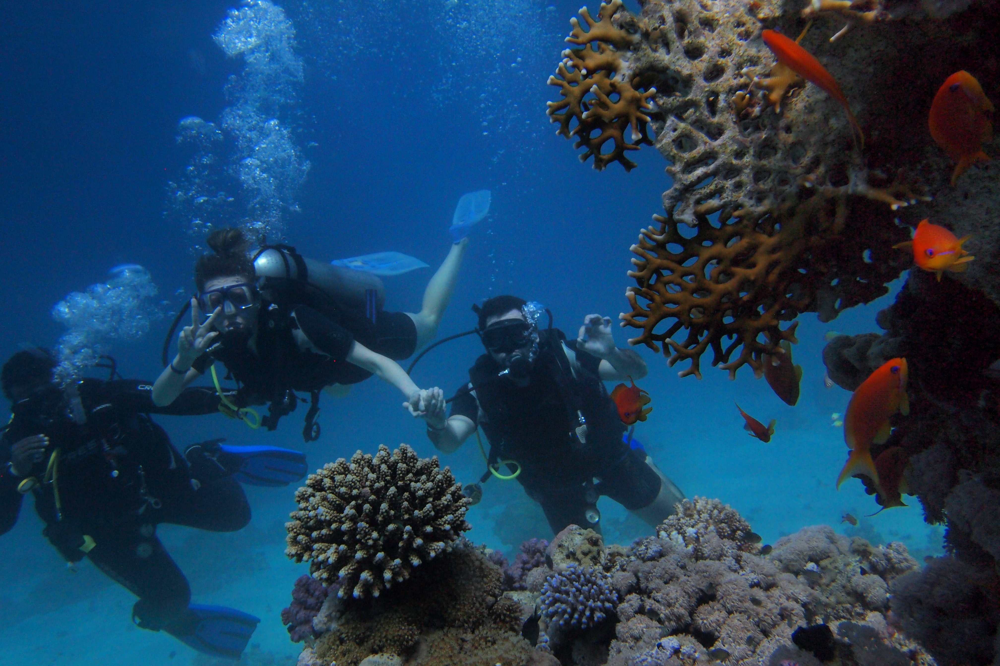
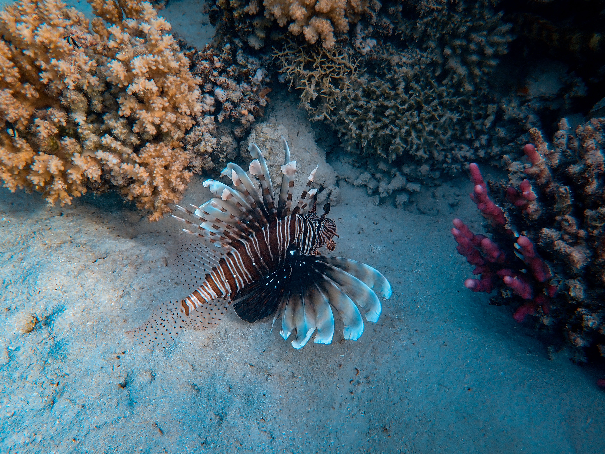
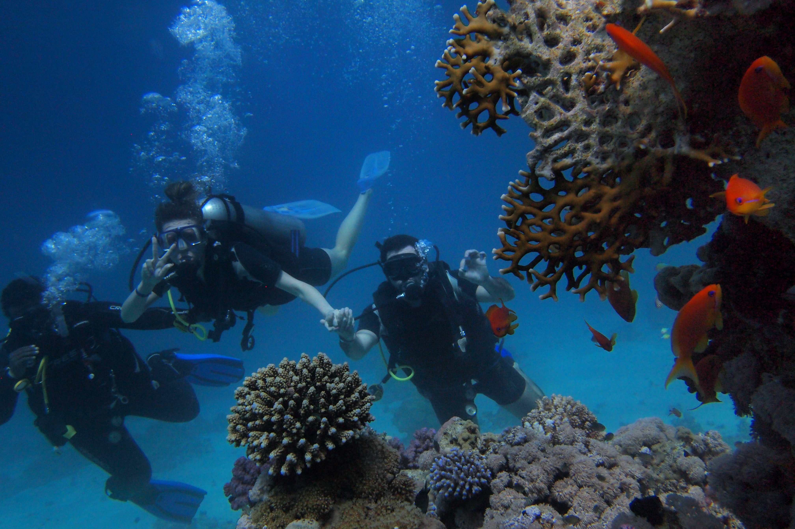

UPCOMING TOURS & DESTINATION
Once you’ve become a PADI Divemaster then you can now learn to become a PADI Open Water Scuba Diving Instructor, or an Assistant Instructor. Our courses are run over several weekends so don’t need to interfere with your day to day life. As a PADI Instructor you get the opportunity to teach diving around the world.
The PADI Open Water Diver course is the world’s most popular and recognised scuba diving certification. It has introduced millions of people from around the world to the adventurous diving lifestyle. Once qualified as an open water diver you will have a life-long open water certification that enables you to dive around the world to a maximum depth of 18m. Please read below how we deliver the UK’s best open water courses at our PADI 5-star Instructor Development Centre.
If you would like to see how the online learning works and how easy it is then simply sign up today. We will then send you your unique code for you to have a go at the first open water section. See how easy, fun and interesting it is.
Learn More
 


